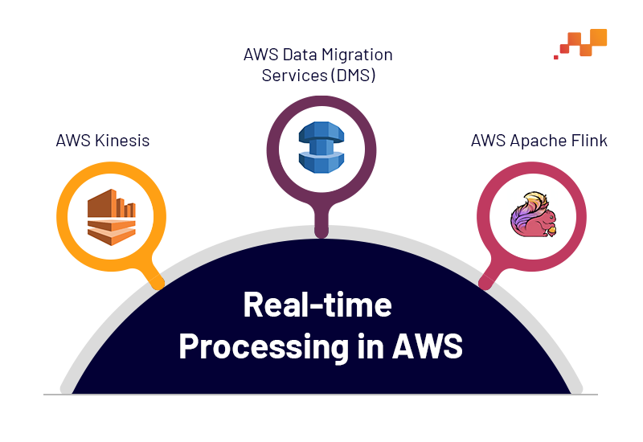

Real-Time Data Processing
Enable high-performance streaming pipelines using AWS Kinesis, Apache Kafka, and AWS Lambda to process and analyze data in real time for instant insights and decision-making.
Process Data Instantly
Build event-driven systems that process data as it arrives. Deliver real-time dashboards, alerts, and automated actions using scalable and resilient streaming architectures.

Real-Time Streaming Architectures for Modern Applications
Design and implement real-time data pipelines that ingest, process, and analyze streaming data from multiple sources such as applications, IoT devices, and logs.
- Build streaming pipelines using Amazon Kinesis and Apache Kafka.
- Process events in real time with AWS Lambda and stream processing frameworks.
- Enable real-time dashboards, alerts, and anomaly detection.
Integrate services like Kinesis Data Streams, Kinesis Firehose, MSK (Managed Kafka), and Lambda to create scalable event-driven systems. Ensure low-latency processing and high throughput.
From fraud detection and log analytics to real-time user behavior tracking, build systems that react instantly to data. Enhance observability with monitoring, alerting, and automated responses.